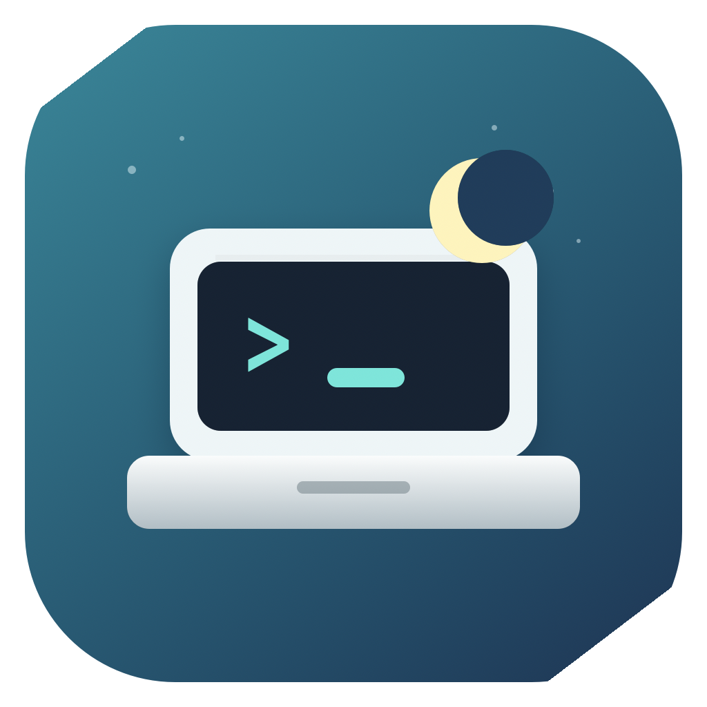

CL
Close Your Laptop
Let Claude or Codex keep working with the lid closed, then let the Mac sleep.
Download- System
- macOS 13+
- Watches
- Claude, Codex
- Mode
- Menu bar
- Goal
- Battery-first sleep

About
A narrow keep-awake helper for active AI coding work.
Close Your Laptop is a tiny macOS menu-bar app for the moment when an agent is still working but the MacBook needs to be closed. It watches for active Claude and Codex sessions, holds sleep only while that work is real, and releases the hold as soon as the run is done.
- Watches Claude Code, Codex CLI, Claude Desktop, and Codex Desktop when they show real project activity.
- Holds Uses native macOS sleep assertions plus a temporary closed-lid battery override when needed.
- Releases Clears sleep holds after agent work stops, or if the watchdog heartbeat stops refreshing.
- Boundary It is not a broad caffeine switch, desk clamshell mode, or a promise to keep the Mac awake forever.
Screen
Awake only while work is active.
The menu-bar surface is built around the current assertion state, detected agent work, watcher setup, and the closed-lid helper.
How
Close the lid. Keep the run honest.
- Install the app, then start a Claude or Codex session for real project work.
- Use Preferences to install the tiny watcher or closed-lid helper when that workflow needs it.
- Close the MacBook while the agent is active; the menu item reports whether sleep is being held.
- When the agent finishes, Close Your Laptop releases the hold so macOS can sleep again.
Support
Support starts with power state, helper state, and redacted diagnostics.
Closed-lid sleep behavior depends on macOS power assertions, battery state, app activity, and whether the helper is installed. Useful reports should show those facts without exposing project names, tokens, prompts, or private logs.
- Include macOS version, app version, Mac model, battery or power state, detected agent, and the relevant redacted diagnostics snapshot.
-
Check
Whether the app is in Applications, the watcher is current, the helper is installed, and
pmsetshows the expected sleep state. - Private Do not share tokens, full project paths, full terminal transcripts, private prompts, or unredacted unified logs.